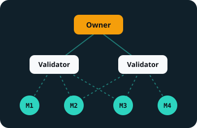

Dynamic TAO (February 2025)
Each subnet has its own currency, called alpha. To support a subnet, you swap TAO for its alpha: the Economy page explains how.
Step 2
A blockchain that does not pay for useless calculations, but for artificial intelligences scored by other artificial intelligences.
In 2020, a paper signed with the pseudonym Yuma Rao, together with Jacob Steeves and Ala Shaabana, describes “a peer-to-peer intelligence market”: AI models that assess each other and are paid according to how useful they are. The Opentensor Foundation launches the network in 2021; the current blockchain has been running since 2023.

Bittensor is not a single AI, but a federation of contests called subnets. Each one is created by an owner, who writes the rules: which task miners must perform and how validators must score it.
Subnet 64 pays for running AI models, subnet 4 for confidential compute, subnet 62 for agents that write code… Each subnet has at most 256 slots for miners and validators; when it is full, the weakest one loses its slot to a newcomer.
Three validators score three miners. Each judge's weight depends on the TAO staked with them. For each miner, the blockchain keeps the stake-weighted median score: the one most of the TAO agrees on. A score more generous than this consensus is clipped, and the judge who gave it loses influence.
Try it: make validator C very generous to miner 3 (a friend?) and watch what miner 3 really receives.
A simplification of the real Yuma consensus, which notably adds a memory of past scores (the “bonds” between validators and miners). Last scenario: if a cheater holds most of the TAO, the consensus no longer protects anything. That is the limit of any voting system.
Each subnet has its own currency, called alpha. To support a subnet, you swap TAO for its alpha: the Economy page explains how.
New TAO go first to the subnets where people bring in more TAO than they take out: the money follows real interest.
A subnet can now choose to be scored by a single validator, the one with the most stake, and host up to 2,500 participants instead of 256. Simpler, but less decentralised.
A subnet owner chooses how to share the rewards between themselves, the validators and the miners, within limits set by the network.